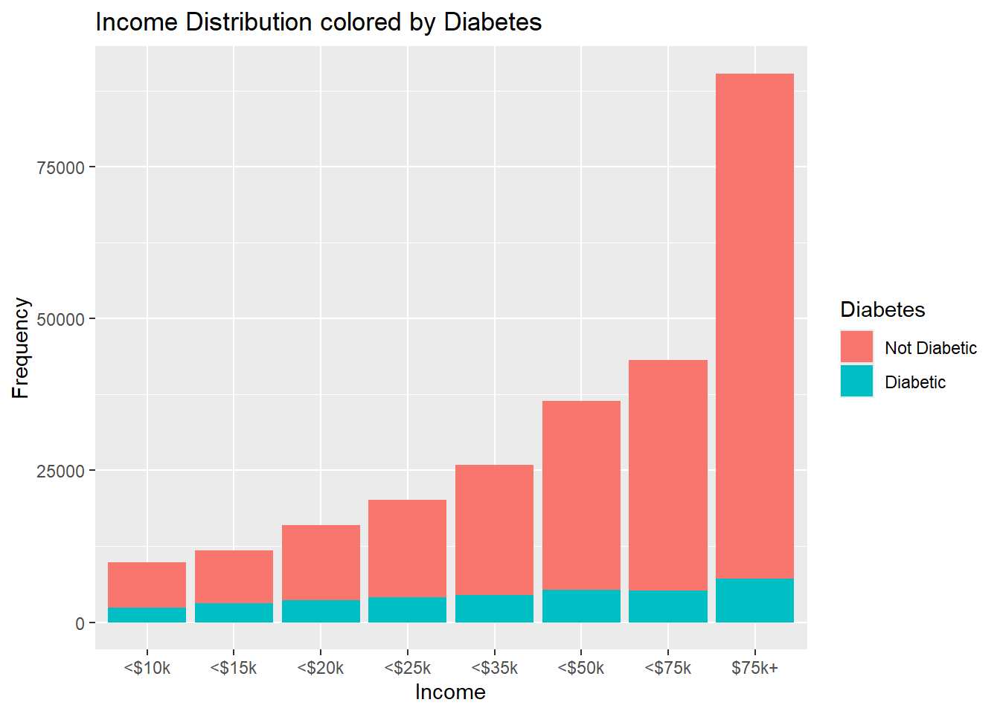
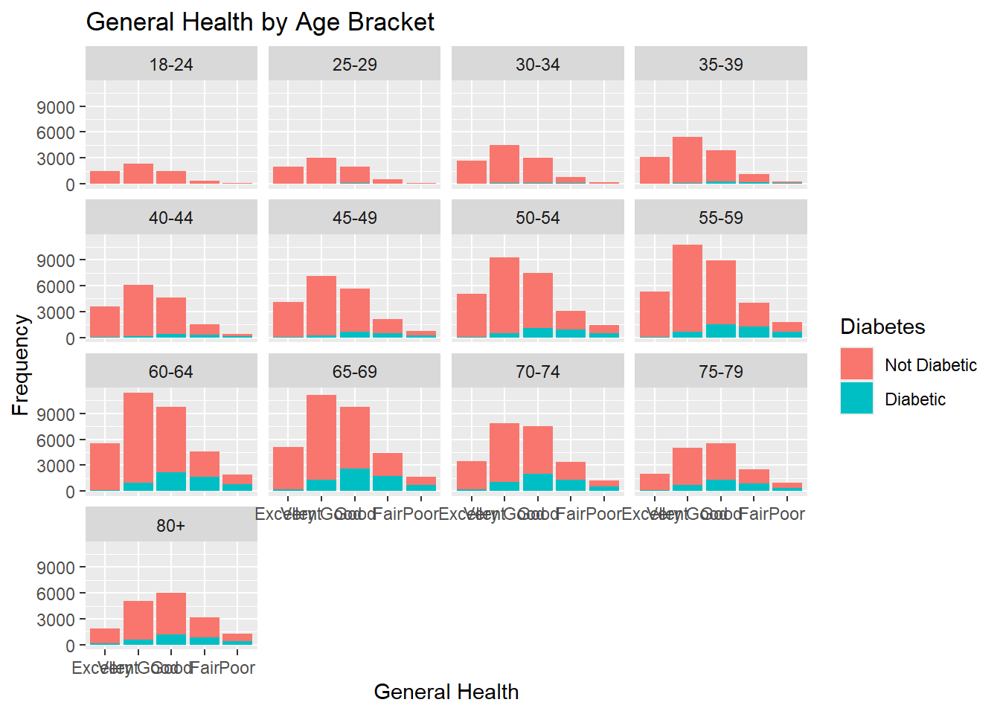

The purpose of this document is to showcase our exploration of models for classifying people as diabetic based on a variety of factors.Our data comes from Behavioral Risk Factor Surveillance System data set on Kaggle where the organization phoned over 400,000 individuals in 2015 asking about the presence of diabetes and other factors.
The purpose of our exploratory data analysis is to explore some possible connections with respect to our response variable (diabetes). We will not review all variables in this document. Those included in our analyses are:
HighBP (High Blood Pressure flag)
HighChol (High Cholesterol flag)
Age (Age Brackets)
GenHlth (General Health Category)
Sex (Female/Male)
PhysHlth (# days Physical exercise past 30 days)
MntlHlth
Education (Category of greatest education completed)
Income (Income bracket)
Smoker (Smoker flag)
We aim to correctly classify individuals as diabetic (or not) based on these variables and understand our most important/impactful variables. In real life, this could be used to predict diabetes or those at risk of developing diabetes. We will review a series of models and pick our best one!
Libraries & Reading Data
Below we will read in our libraries and our diabetes data set. As we can see in the output, some of our “numeric” variables shouldn’t be numeric as they are categorical variables.
library(tidyverse)
── Attaching core tidyverse packages ──────────────────────── tidyverse 2.0.0 ──
✔ dplyr 1.1.4 ✔ readr 2.1.5
✔ forcats 1.0.0 ✔ stringr 1.5.1
✔ ggplot2 3.5.1 ✔ tibble 3.2.1
✔ lubridate 1.9.3 ✔ tidyr 1.3.1
✔ purrr 1.0.2
── Conflicts ────────────────────────────────────────── tidyverse_conflicts() ──
✖ dplyr::filter() masks stats::filter()
✖ dplyr::lag() masks stats::lag()
ℹ Use the conflicted package (<http://conflicted.r-lib.org/>) to force all conflicts to become errors
As stated, a lot of our data is labeled as a numeric type but should be categorical. Lets change all those for factors, and for everything that is not binary we will provide labels explicitly.
data <- raw_data %>%mutate(Diabetes_binary =factor(Diabetes_binary,levels=c(0,1),labels=c('Not Diabetic','Diabetic')),HighBP =factor(HighBP,levels=c(0,1),labels=c('No High BP','High BP')),HighChol =factor(HighChol,levels=c(0,1),labels=c('No High Cholesterol','High Cholesterol')),Smoker =factor(Smoker,levels=c(0,1),labels=c('Not a Smoker','Smoker')),GenHlth =factor(GenHlth,levels=seq(1:5),labels=c('Excellent','Very Good','Good','Fair','Poor')),#DiffWalk = as.factor(DiffWalk),Sex =factor(Sex,levels=c(0,1),labels=c('Female','Male')),Age =factor(Age,levels=seq(1:13),labels=c('18-24','25-29','30-34','35-39','40-44','45-49' ,'50-54','55-59','60-64','65-69','70-74','75-79','80+') ),Education =factor(Education,levels=seq(1:6),labels=c('Never attended school or only kindergarten','Grades 1-8','Grades 9-11','Grade 12 or GED','College 1-3 years','College 4+ years')),Income =factor(Income,levels=seq(1:8),labels=c('<$10k','<$15k','<$20k','<$25k','<$35k','<$50k','<$75k','$75k+')) )head(data)
# A tibble: 6 × 22
Diabetes_binary HighBP HighChol CholCheck BMI Smoker Stroke
<fct> <fct> <fct> <dbl> <dbl> <fct> <dbl>
1 Not Diabetic High BP High Cholesterol 1 40 Smoker 0
2 Not Diabetic No High BP No High Cholesterol 0 25 Smoker 0
3 Not Diabetic High BP High Cholesterol 1 28 Not a S… 0
4 Not Diabetic High BP No High Cholesterol 1 27 Not a S… 0
5 Not Diabetic High BP High Cholesterol 1 24 Not a S… 0
6 Not Diabetic High BP High Cholesterol 1 25 Smoker 0
# ℹ 15 more variables: HeartDiseaseorAttack <dbl>, PhysActivity <dbl>,
# Fruits <dbl>, Veggies <dbl>, HvyAlcoholConsump <dbl>, AnyHealthcare <dbl>,
# NoDocbcCost <dbl>, GenHlth <fct>, MentHlth <dbl>, PhysHlth <dbl>,
# DiffWalk <dbl>, Sex <fct>, Age <fct>, Education <fct>, Income <fct>
Now that we’ve converted some things to factors, lets check for nulls (NA). There are none! Great news, since we know that not accounting for nulls can hurt our data quality and modeling.
Exploring our data is important. In this section, we’ll take a look at our categorical and numeric variables and trends with respect to our outcome (presence of diabetes). This will include tables and plots.Please note that not all variables are included in our preliminary analyses
Categorical
Starting with some contingency tables, lets look at two-way contingency tables. Based on what I know, I think that our Age variable (age brackets), HighBP (high blood pressure), and Highhol (high cholesterol) may provide some insights.
From the below outputs we see that
It is difficult to observe trends in Age bracket and the presence of Diabetes, but we can roughly tell the distribution of our Age brackets. We’ll explore this further in graphs.
The majority of those that have diabetes have High Blood Pressure
The majority of those that have diabetes have High Cholesterol
At surface level, Sex seems to be of equal sample proportions for those with and without diabetes
data %>%group_by(Age,Diabetes_binary) %>%summarize(count =n())
`summarise()` has grouped output by 'Age'. You can override using the `.groups`
argument.
# A tibble: 26 × 3
# Groups: Age [13]
Age Diabetes_binary count
<fct> <fct> <int>
1 18-24 Not Diabetic 5622
2 18-24 Diabetic 78
3 25-29 Not Diabetic 7458
4 25-29 Diabetic 140
5 30-34 Not Diabetic 10809
6 30-34 Diabetic 314
7 35-39 Not Diabetic 13197
8 35-39 Diabetic 626
9 40-44 Not Diabetic 15106
10 40-44 Diabetic 1051
# ℹ 16 more rows
data %>%group_by(Diabetes_binary,HighBP) %>%summarize(count =n())
`summarise()` has grouped output by 'Diabetes_binary'. You can override using
the `.groups` argument.
# A tibble: 4 × 3
# Groups: Diabetes_binary [2]
Diabetes_binary HighBP count
<fct> <fct> <int>
1 Not Diabetic No High BP 136109
2 Not Diabetic High BP 82225
3 Diabetic No High BP 8742
4 Diabetic High BP 26604
data %>%group_by(Diabetes_binary,HighChol) %>%summarize(count =n())
`summarise()` has grouped output by 'Diabetes_binary'. You can override using
the `.groups` argument.
# A tibble: 4 × 3
# Groups: Diabetes_binary [2]
Diabetes_binary HighChol count
<fct> <fct> <int>
1 Not Diabetic No High Cholesterol 134429
2 Not Diabetic High Cholesterol 83905
3 Diabetic No High Cholesterol 11660
4 Diabetic High Cholesterol 23686
data %>%group_by(Diabetes_binary,Sex) %>%summarize(count =n())
`summarise()` has grouped output by 'Diabetes_binary'. You can override using
the `.groups` argument.
# A tibble: 4 × 3
# Groups: Diabetes_binary [2]
Diabetes_binary Sex count
<fct> <fct> <int>
1 Not Diabetic Female 123563
2 Not Diabetic Male 94771
3 Diabetic Female 18411
4 Diabetic Male 16935
Now for some three-way contingency tables. From the above, we saw that people with diabetes exhibited High Blood Pressure OR High Cholesterol. We want to see if that can also be an AND statement. Furthermore, I’m curious on if being a smoker and an assessment of general health has an impact.
From the below outputs we observe…
High Cholesterol AND High Blood Pressure is often seen in those with diabetes
Those without diabetes exhibit Very Good general health (mode) with perhaps a slight penalty for being a smoker.
Those with diabetes seem to have slightly lower general health of Good with a slight shift in distribution towards Fair if they smoke
data %>%group_by(Diabetes_binary,HighChol,HighBP) %>%summarize(count =n())
`summarise()` has grouped output by 'Diabetes_binary', 'HighChol'. You can
override using the `.groups` argument.
# A tibble: 8 × 4
# Groups: Diabetes_binary, HighChol [4]
Diabetes_binary HighChol HighBP count
<fct> <fct> <fct> <int>
1 Not Diabetic No High Cholesterol No High BP 97651
2 Not Diabetic No High Cholesterol High BP 36778
3 Not Diabetic High Cholesterol No High BP 38458
4 Not Diabetic High Cholesterol High BP 45447
5 Diabetic No High Cholesterol No High BP 4269
6 Diabetic No High Cholesterol High BP 7391
7 Diabetic High Cholesterol No High BP 4473
8 Diabetic High Cholesterol High BP 19213
data %>%group_by(Diabetes_binary,Smoker,GenHlth) %>%summarize(count =n())
`summarise()` has grouped output by 'Diabetes_binary', 'Smoker'. You can
override using the `.groups` argument.
# A tibble: 20 × 4
# Groups: Diabetes_binary, Smoker [4]
Diabetes_binary Smoker GenHlth count
<fct> <fct> <fct> <int>
1 Not Diabetic Not a Smoker Excellent 29755
2 Not Diabetic Not a Smoker Very Good 49460
3 Not Diabetic Not a Smoker Good 32877
4 Not Diabetic Not a Smoker Fair 9627
5 Not Diabetic Not a Smoker Poor 2509
6 Not Diabetic Smoker Excellent 14404
7 Not Diabetic Smoker Very Good 33243
8 Not Diabetic Smoker Good 29312
9 Not Diabetic Smoker Fair 12153
10 Not Diabetic Smoker Poor 4994
11 Diabetic Not a Smoker Excellent 594
12 Diabetic Not a Smoker Very Good 3408
13 Diabetic Not a Smoker Good 6822
14 Diabetic Not a Smoker Fair 4475
15 Diabetic Not a Smoker Poor 1730
16 Diabetic Smoker Excellent 546
17 Diabetic Smoker Very Good 2973
18 Diabetic Smoker Good 6635
19 Diabetic Smoker Fair 5315
20 Diabetic Smoker Poor 2848
Now for some graphs! To start out, we made a statement earlier that it was difficult to infer anything from our Age and Diabetes contingency table earlier. Lets visualize this graphically. We see in the below that our distribution is left skewed for our respondents and it seems that there is little to know impact of age on the precense of diabetes.
ggplot(data,aes(x=Age,fill=Diabetes_binary) ) +geom_bar() +scale_fill_discrete("Diabetes") +labs(y ='Frequency',title='Age Distribution colored by Diabetes')
Similar to Age, lets create similar bar graphs for levels of income and education. It is our hypothesis that there is no connection or obvious patterns here. Lets see what it looks like at first glance
Our hypothesis appears correct.
ggplot(data,aes(x=Income,fill=Diabetes_binary) ) +geom_bar() +scale_fill_discrete("Diabetes") +labs(y ='Frequency',title='Income Distribution colored by Diabetes')

ggplot(data,aes(x=Education,fill=Diabetes_binary) ) +geom_bar() +scale_fill_discrete("Diabetes") +labs(y='Frequency',title='Income Distribution colored by Diabetes')
Maybe we can find some patterns using faceting. Lets build a series of bar graphs with GenHealth on our X-Axis colored by the presence of diabetes. Lets facet this by our age brackets to see if there’s a pattern.
The output isn’t super friendly, but because we know our General Health is a factor type the axis goes from left-to-right in the following order: Excellent,Very Good,Good,Fair,Poor
Looking at General Health alone, it seems there’s a slight right skew that becomes more normal with age. Its difficult to tell, but there may be some suggestion that your general health leads to an increased risk of diabetes due to the eye-level proportions.
ggplot(data,aes(x=GenHlth,fill=Diabetes_binary) ) +geom_bar() +scale_fill_discrete("Diabetes") +labs(x='General Health',y ='Frequency',title='General Health by Age Bracket') +facet_wrap(~Age)

Numeric
We have a lot less numeric variables here to analyze, but there still may be some important details in our summaries. Lets look at our distributions and measures of spread and central tendency.
For starters, lets look at standalone variables. Lets look at some stats for BMI,MentHlth,PhysHlth.
Below are some observations:
Our mean and median BMI values are between 27-29 with a standard deviation of 6. With a slight left skew, both values fall into the “Overweight” category.
The median number of days (over past 30 days) our participants expressed having some mental health problems is 0. This is a bit odd and may showcase some bias in how our participants evaluate themselves.
Yikes! The median number of days (over past 30 days) our participants expressed participating in physical activities is also 0! Not a very active bunch!
data %>%summarize("mean"=mean(BMI),"median"=median(BMI),"var"=var(BMI),"sd"=sd(BMI),"IQR"=IQR(BMI) )
# A tibble: 1 × 5
mean median var sd IQR
<dbl> <dbl> <dbl> <dbl> <dbl>
1 28.4 27 43.7 6.61 7
data %>%summarize("mean"=mean(MentHlth),"median"=median(MentHlth),"var"=var(MentHlth),"sd"=sd(MentHlth),"IQR"=IQR(MentHlth) )
# A tibble: 1 × 5
mean median var sd IQR
<dbl> <dbl> <dbl> <dbl> <dbl>
1 3.18 0 55.0 7.41 2
data %>%summarize("mean"=mean(PhysHlth),"median"=median(PhysHlth),"var"=var(PhysHlth),"sd"=sd(PhysHlth),"IQR"=IQR(PhysHlth) )
# A tibble: 1 × 5
mean median var sd IQR
<dbl> <dbl> <dbl> <dbl> <dbl>
1 4.24 0 76.0 8.72 3
Lets go a step beyond one-variable summaries here. Mental Health and Physical Health seem that they may have their own problems. Fortunately for us, we have a BMI number. We would expect our measures of central tendency to be higher, on average, for those with diabetes.
Our hypothesis seems correct at first glance with our median BMI being 27 (Overweight) for those without diabetes and 31 (Obese) for those with diabetes. We’ll explore this more in our graphs.
It would be interesting to see this faceted across our categorical HighChol and HighBp measures. We would expect to see some patterns.
It is difficult to tell in the graphs, but the graphs look similar across low and high levels of each categorical. There may be a slight shift to the right (BMI) in measures of central tendency across high levels of each categorical. We’ll uncover more on the impact of this in our modeling!
bmi_plot +labs(title ='BMI Distribution Across Generic Cholesterol Levels') +facet_wrap(~HighChol)
bmi_plot +labs(title ='BMI Distribution Across Generic Blood Pressure Levels') +facet_wrap(~HighBP)
From our previous analyses, I hypothesize that mental health and physical health have little to no influence, and its hard to think a box plot or violin plot will provide much information.
What about our correlation between our numeric variables.? It seems BMI and our numeric health metrics have little correlation, but we see low-to-moderate positive correlation between MentHlth and PhysHlth.
That concludes our exploratory data analysis. We’ve seen a lot of interesting trends or absence of trends. Generally, here are some highlights:
BMI seems to be higher for those with diabetes
Mental Health and Physical Health measures seem to have some correlation, but none that seem to impact BMI or classification of someone having diabetes.
General Health may have some impact on developing diabetes.
High Blood Pressure and/or High Cholesterol are relatively more common in those with diabetes than those without.